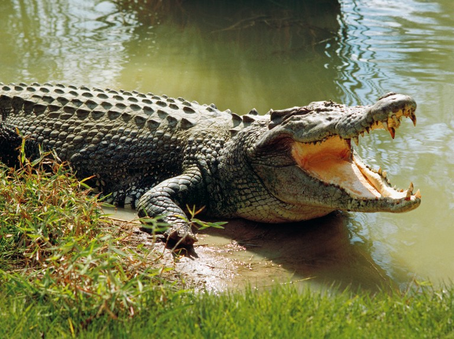

Welcome to Dehiwala Zoo
The Dehiwala National Zoo, which has a remarkable collection of exotic and indigenous fauna, is one of the oldest Zoos in Asia. The Zoo in Sri Lanka is widely known as Colombo Zoo all over the world. Currently, Dehiwala Zoo houses 72 species of Mammals, 65 species of Birds, 31 species of Reptiles, 89 species of Fish, 03 families of Amphibians and 30 species of Butterflies etc. The total number of animals varies from 2500-3000 due to breeding and free living colonies of birds.
Dehiwala Zoo has become famous among the visitors not only for collection of local and exotic animals but also for landscaping with lush greeneries. The Zoo supports and promotes conservation by breeding certain rare and endangered species through proper animal welfare. Annually, over one and half million local and foreign tourists visit the Zoo. And over 2000 students and groups of students from schools and universities visit the Zoo for educational purposes. The Zoo is trying to keep the pace with the changing world. It has been involved in some major redevelopment programmes with the aim of enhancing the overall image of the Zoo while providing maximum facilities for animals and the visitors.
ZOO RULES
Zoo rules are created for the safety and welfare of both our guests and the animals. Please obey all rules, guidelines and posted signs throughout Zoo property. The Zoo staff will remove anyone who violates the rules and guidelines. We reserve the right to inspect any item brought onto Zoo property.
-
Respect the Animals
Please treat the Zoo’s animals with the respect they deserve. Animal World Snake Farm Zoo is their home. Do not yell at or taunt the animals, do not bang on their enclosures and do not throw objects into their habitats. We will remove you from the property the first time this rule is violated.
-
Respect your Boundaries
Never cross any fence or barrier in the Zoo. Do not try to touch the animals-if an animal has teeth, it can bite; if an animal has claws, it can scratch. This is for the safety of both our visitors and our animals.We will remove you from the property the first time this rule is violated.
-
Do Not Feed the Animals
The animals at Animal World Snake Farm Zoo have veterinarian approved and formulated diets to ensure their health and wellbeing. Human food may make them sick. We will remove you from the property the first time this rule is violated. Note: you may feed the animals that participate in the “Feed Your Friends” program with approved food purchased from the gift shop.
-
No Smoking
To decrease fire hazards and ensure the safety and health of the animals, guests and staff, smoking is not permitted on property. This includes the parking lot.
-
No Pets
All pets are prohibited from the Zoo to protect both the Zoo animals and your animals. Do not leave pets in your car while you are in the zoo or will we ask you to leave and return without them. Service animals are allowed in the zoo, though they are not permitted to enter the petting zoo.
-
Children Must be Supervised at All Times
We get it-kids are adventurous and like to wander! However, we want your kiddos to stay safe. Keep an eye on them and make sure they are supervised at all times. Any individual under the age of 16 must be accompanied by an adult when visiting the Zoo.
-
Dress Code
Shirts and shoes must be worn at all times. Swimwear must be sufficiently covered. Offensive or provocative items on clothing or swimwear is prohibited. Costumes or disguises that conceal identity are not permitted. Animal World Snake Farm Zoo reserves the right to refuse admission to anyone who refuses to comply with the dress code summarized above.
We’re glad to be together again, but from a safe distance!
We’re taking extra precautions in our Zoo to help our guests, animals, and team members stay safe and healthy by:
- Using enhanced cleaning and disinfecting procedures for high-traffic areas, surfaces, equipment, etc. with disinfectant shown to be effective against COVID-19
- Following and encouraging rigorous hand-washing procedures
- Adding lots of new hand sanitizing stations throughout the park
- Requiring our team members to wear face masks covering both their nose and mouth
- Rearranging our displays and flow patterns to facilitate social distancing
- Reminding everyone to practice social distancing by placing markers every 6 feet throughout the Zoo (both indoors and outdoors)
- Offering a contact-less ticketing option where guests have the choice of pre-purchasing tickets and animal feed through our website